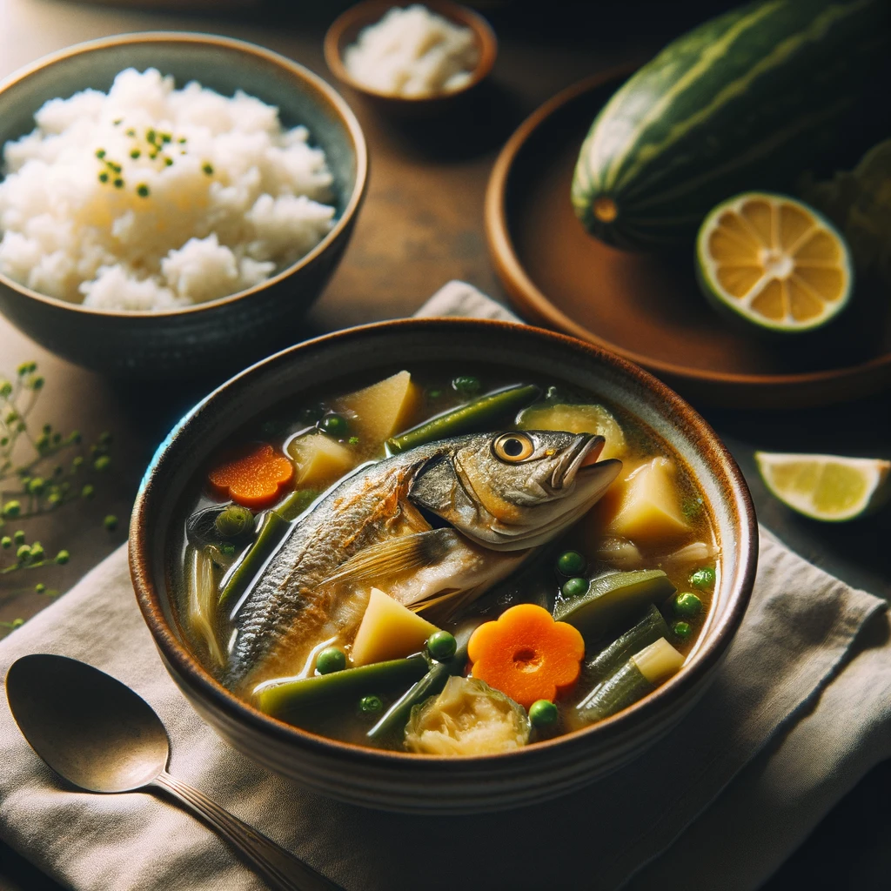

Fish Tinola with Ginger
Ingredients
- 150 grams fish fillet (boneless and skinless)
- 2 cups water
- 1 stalk lemongrass, white part only, bruised
- 1 thumb-sized ginger knob, sliced
- 1 small onion, sliced
- 1 clove garlic, minced
- 1 small tomato, sliced
- 1/2 green chili pepper, sliced (adjust according to spice preference)
- 1/4 teaspoon dried fish sauce (patis)
- Salt and black pepper to taste
- 1 tablespoon chopped malunggay leaves (optional)
| Nutrition Facts |
Amount |
| Calories |
250-300kcal |
| Protein |
30-35 |
| Fat |
5-7g |
Meal Procedure
- In a pot, bring the water to a boil.
- Add the lemongrass, ginger, onion, and garlic. Simmer for 3-5 minutes, allowing the flavors to infuse the broth.
- Add the fish fillet and gently simmer for 5-7 minutes, or until the fish is cooked through and flakes easily with a fork.
Add the tomato, chili pepper, and dried fish sauce. Season with salt and pepper to taste.
- Simmer for an additional 2-3 minutes.
- Remove the lemongrass stalk before serving.
- (Optional) Garnish with chopped malunggay leaves for additional vitamins and minerals.